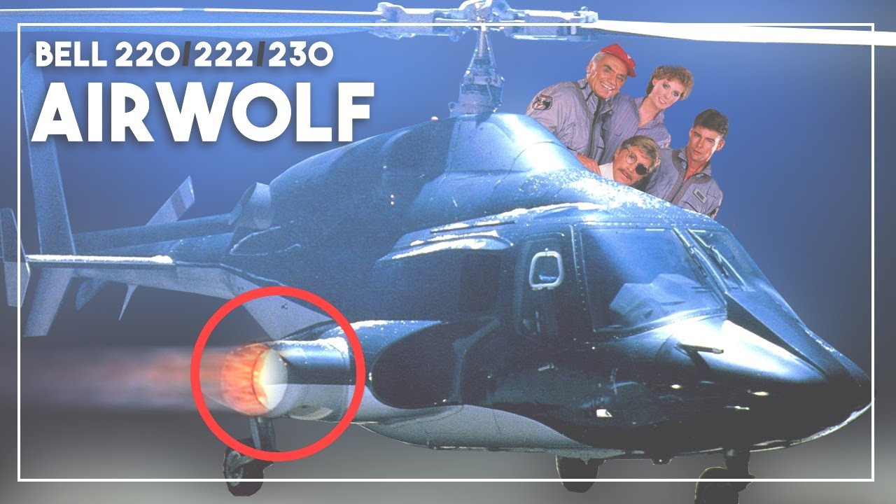

Aguia de fogo
"AGUIA DE FOGO" fazia parte de uma 'leva' de séries, cujo protagonista não era um ser humano e sim alguma espécie de máquina. Embora algumas destas séries sejam lembradas até hoje, particularmente acho que o fato do protagonista não ser humano limita um pouco o campo de ação do seriado. Por exemplo em "Águia de Fogo" o helicóptero tinha de aparecer de alguma maneira, o que obrigava o episódio a ter algum tipo de perseguição aérea.

Claro que isto (o protagonista não ser humano) acaba por diminuir os custos da produção, pois as cenas do helicóptero 'entrando' em ação só precisavam ser filmadas poucas vezes. Era sempre o piloto e o co-piloto entrando, ligando os rotores, as hélices começam a girar, o aparelho levanta voo e parte...De resto eram cenas dentro do cabine, das armas disparando, o aparelho em voo, etc.
Nunca entendi o nome do seriado aqui no Brasil. Ora, o helicóptero não tinha absolutamente nada que lembrasse uma águia, sequer uma imagem pintada...A insígnia no uniforme dos co-protagonistas era um lobo, com asas de morcego e rosnando...Por que 'Águia de Fogo'? Será que alguém na distribuidora brasileira achou que "Lobo do Ar" ficaria estranho e que 'Águia de Fogo' ficaria melhor...afinal águias voam e as armas do helicóptero soltam fogo quando disparadas...
